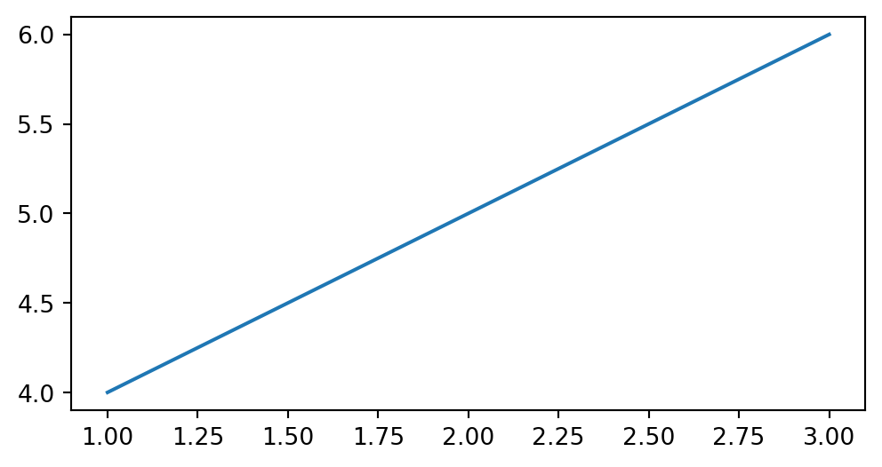

# greetings.py
def say_hello(name):
"""Print a friendly greeting."""
return f"Hello, {name}!"
def say_goodbye(name):
"""Print a farewell message."""
return f"Goodbye, {name}!"9 Introduction to Modules and Libraries
In Python, modules and libraries play a crucial role in organizing code, promoting reusability, and extending the functionality of your programs. A module is a file containing Python definitions and statements that can be imported into your scripts, while a library is a collection of modules that provide related functionality. Understanding how to use both built-in and custom modules will enhance your ability to write efficient and maintainable code.
9.1 Understanding Modules
Modules allow you to break your code into separate files, making it easier to manage and understand. A module can contain functions, classes, variables, and runnable code. By organizing your code into modules, you can create reusable components that can be easily imported into other projects.
Example: Creating a Simple Module
Let’s start by creating a simple module. Suppose we have a file named greetings.py:
This module contains two functions: say_hello and say_goodbye. You can import this module into another script and use these functions.
Example: Using the Module
# main.py
import greetings
print(greetings.say_hello("Alice"))
print(greetings.say_goodbye("Alice"))Running main.py would output:
Hello, Alice!
Goodbye, Alice!
Note
The .py file that you are importing as a module needs to be in the same directory as the file you are importing the module into. In the example above, greetings.py and main.py needs to be in the same directory.
Here, the greetings module is imported, and its functions are called to print personalized messages. This simple example demonstrates the power of modules in keeping your code organized and reusable.
9.2 Importing Modules
Modules are imported to gain access to their functions, classes, and variables. Python provides several methods for importing modules, each offering different levels of control and flexibility depending on your use case. Let’s explore these methods in detail.
Standard Import
The most common way to import a module is by using a standard import statement. This method imports the entire module, making all of its contents accessible. However, to use any function or class from the module, you must prefix it with the module’s name. This ensures that there are no conflicts between functions or variables from different modules, as everything is neatly contained within its namespace.
Example: Using math Module
import math
# Accessing the square root function from the math module
result = math.sqrt(16)
print(result) 4.0In this example, the math module is imported, and we use the sqrt function by referencing it through the module’s name.
Importing Specific Functions or Classes
Sometimes, you may only need a specific function, class, or variable from a module. Python allows you to import only what you need, which can make your code cleaner and more efficient. When you import specific items, you don’t need to prefix them with the module’s name, as they are directly accessible.
Example: Importing sqrt from math
from math import sqrt
# Directly using the imported sqrt function
result = sqrt(16)
print(result) 4.0This method is particularly useful when you need to use a specific function frequently and want to avoid repeatedly typing the module name. However, it’s important to be cautious with this approach, as it can lead to naming conflicts if different modules contain functions or variables with the same name.
You can import multiple items from a module by separating them with commas:
from math import sqrt, pi
# Using both imported items directly
print(sqrt(25))
print(pi) 5.0
3.141592653589793Importing All Names with *
In certain cases, you might want to import everything from a module, making all its functions and variables directly accessible without needing to prefix them with the module’s name. This can be done using the * wildcard. However, this method is generally discouraged because it can lead to unexpected name conflicts and make the code harder to understand and debug.
Example: Importing All from math
from math import *
# Using functions and constants directly
print(sqrt(16))
print(pi) 4.0
3.141592653589793While this approach can save typing and is convenient in small scripts or interactive sessions, it is not recommended for larger programs or libraries, where clarity and maintainability are critical.
Import with Alias
Modules can sometimes have long names, or you may want to avoid conflicts between modules that share the same name. In these situations, you can import a module under a different name, known as an alias. This allows you to reference the module using a shorter or more descriptive name, making your code more concise and readable.
Example: Importing math with an Alias
import math as m
# Using the alias to access functions from the math module
result = m.sqrt(16)
print(result) 4.0Aliases are particularly useful when working with libraries that have long names or when you frequently use a module in your code. They help in maintaining readability while reducing the amount of typing required.
Example: Avoiding Name Conflicts with Aliases
import matplotlib.pyplot as plt
# Using aliases in place of longer name
plt.plot([1, 2, 3], [4, 5, 6])
Installing
matplotlib
Most installs of Python do not include matplotlib as a base library. You may need to install it. Open up a terminal. Run the following code to install matplotlib.
pip install matplotlib --userNote that if you are using a virtual environment, you will need to make sure the virtual environment is activated first.
Importing Modules from a Package
Python also supports importing modules from a package, which is a collection of modules organized under a common namespace. Packages help in organizing related modules and can be imported similarly to regular modules.
Example: Importing from a Package
from os import path
# Using the path module from the os package
print(path.exists("example.txt")) FalseIn this example, the path module is imported from the os package, and its exists function is used to check if a file exists. Packages are an essential part of Python’s ecosystem, allowing you to organize and distribute your code effectively.
9.3 Built-in Libraries
Python comes with a rich set of built-in libraries that cover a wide range of functionalities, from mathematical operations to file handling and beyond. Let’s explore a few common libraries that you will frequently use in your programming journey.
The math Library
As you have already seen, the math library provides mathematical functions and constants.
Example: Basic Usage of math Library
import math
# Using constants
print(math.pi)
# Using functions
print(math.factorial(5))
print(math.sqrt(25))3.141592653589793
120
5.0The random Library
The random library is used for generating random numbers and making random selections.
Example: Using random Library
import random
# Generating a random number between 1 and 10
print(random.randint(1, 10))
# Picking a random choice from a list
choices = ['apple', 'banana', 'cherry']
print(random.choice(choices)) 5
bananaThis library is particularly useful in simulations, games, and scenarios where randomness is needed.
9.4 Creating Custom Modules
Creating your own modules allows you to encapsulate code that can be reused across multiple projects. As you progress in your coding journey, you’ll find this practice invaluable for maintaining clean and organized code.
Example: Building a Utility Module
Let’s create a module named utils.py that contains some utility functions:
# utils.py
def reverse_string(s):
"""Reverse a given string."""
return s[::-1]
def is_palindrome(s):
"""Check if a string is a palindrome."""
return s == s[::-1]You can now import and use these functions in any script:
# main.py
import utils
word = "level"
print(utils.reverse_string(word))
print(utils.is_palindrome(word)) level
True9.5 Best Practices for Modules and Libraries
When working with modules and libraries in Python, following best practices is essential for creating code that is both maintainable and user-friendly. One of the most important practices is to use descriptive names for your modules. The name of a module should clearly convey its purpose and functionality, making it easier for others (and yourself) to understand what the module does at a glance. For example, a module named math_operations is far more informative than a generic name like utils, as it immediately indicates that the module contains functions related to mathematical operations. Descriptive naming helps prevent confusion, especially in larger projects where multiple modules are used.
In addition to naming, keeping functions within a module focused on a single, well-defined task is crucial. Each function should do one thing and do it well. This approach not only makes your code easier to test and debug but also enhances its reusability. For instance, a function that calculates the average of a list of numbers should not also be responsible for reading the numbers from a file. By adhering to the principle of single responsibility, you ensure that each function is modular, making it easier to mix and match functions across different modules and projects.
Documentation is another critical aspect of writing good modules. Providing clear and comprehensive docstrings for your modules, functions, and classes is essential for making your code accessible to others. Docstrings should explain what the code does, how to use it, and any important details that users need to be aware of. Well-documented code not only helps others understand and use your modules but also serves as a valuable reference for yourself when you return to the code after some time. Good documentation is a sign of professionalism and care in coding, making your work more reliable and easier to maintain.
Finally, it is important to avoid side effects in your modules. Side effects occur when a module executes code automatically upon being imported, such as modifying global variables or performing I/O operations. This can lead to unpredictable behavior and bugs, especially if the user is unaware of these side effects. To prevent this, modules should generally be passive, only providing functions and classes without executing any code unless explicitly intended.
9.6 Exercises
Excersice 1: Creating a Module
Create a module arithmetic.py that contains functions for addition, subtraction, multiplication, and division. Write a script that imports this module and performs these operations on user-provided inputs.
Excersice 2: Using Built-in Libraries
Write a script that uses the random library to generate a random integer and then uses the math library to find the square root of this integer.
Excersice 3: Module Composition
Create a module geometry.py that contains functions to calculate the area and perimeter of different shapes, such as rectangles, circles, and triangles. Write a script that imports this module and allows the user to input the dimensions of a shape, then outputs the calculated area and perimeter.
Excersice 4: Creating a Custom Math Library
Develop a custom math module custom_math.py that includes functions for basic arithmetic operations, factorial calculation, and prime number checking. Extend the module by adding a function to calculate the greatest common divisor (GCD) of two numbers. Write a script to demonstrate the usage of each function in the module.